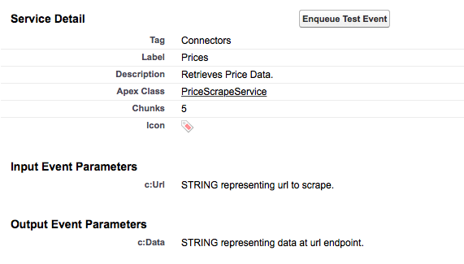

It is important to advertise:
The mechanism for achieving this is described below.
The snippet below illustrates how to document parameters that your service expects on any input message.
global class Definition extends Abstract.Service.Definition {
//...
global Map<String,String> Inputs = new Map<String,String>{
'c:Url' => 'STRING representing url to scrape.'
};
}
The snippet below illustrates how to document parameters that your service either adds to your output message collection or modifies on your output message collection.
global class Definition extends Abstract.Service.Definition {
//...
global Map<String,String> Outputs = new Map<String,String>{
'c:Data' => 'STRING representing data at url endpoint.'
};
}
Documenting the expected inputs and outputs to a service has no effect on the service behavior. It does however provide a useful window into your service for other developers. By clicking on your service from the the services tab, a developer can immeadiately see the asserted expectations of the service as shown below. This is especially useful when access to the source of the service is unavailable (eg compiled third party package)
